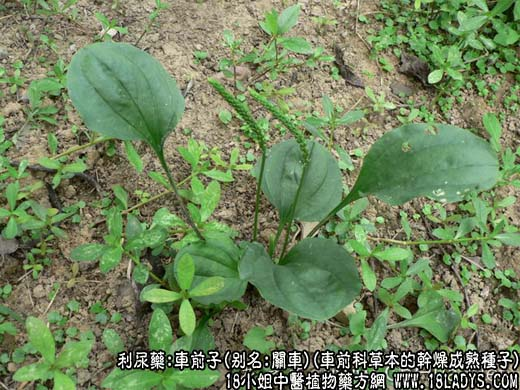
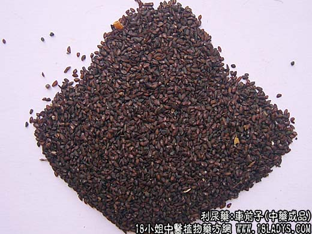
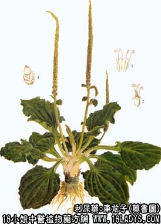

车前子为常用中药。《神农本草经》列为上品。商品有小粒车前子与大粒车前子两种。
1、小粒车前子
来源：为车前科多年生草本植物平车前的干燥成熟种子。
植物形态：主根明显，常不分枝。叶全部为基生，柄长为你叶片1/3或更短，叶片卵状披针形，长4~11厘米，先端尖，基部狭窄成柄，边缘有疏锯齿呈波状，表面绿色，有5~7条近于平行的弧形主肪。花径数枝，高10~30厘米；穗状花序长尾花茎1/2或1/3；花淡绿色，蒴果盖裂。种子通常5枚，黑紫色。
产地：全国各地，主产于黑龙江、辽宁、河北等地，野生于山野、路旁、田埂及河边。
性状鉴别：种子呈椭圆形或不规则长圆形细粒，长1~1.5毫米，宽不足一毫米，一面略凸起，一面稍平。表面棕褐色或黑紫色。扩大镜下观察，可见细密网纹，在稍凸的中部可见白色的小点（俗称开眼）。质坚硬，气微，味淡，嚼之带粘液性。以粒饱满，紫黑色，无杂质者为佳。
2、大粒车前子
别名：江车、关车。
来源：为车前科多年生草本植物车前的干燥成熟种子。
植物形态：与前种基本相似主要区别在于主根不明显，均为须根。高达50厘米，叶为宽卵圆形，具长柄，凡与叶相等或长于叶片，基部稍扩大。花茎数枝，高12~50厘米。蒴果内含种子4~8枚，其余同平车前。
产地：主产于江西、辽宁、河南、四川等地，全国各地均有分布。
性状鉴别：形状与小粒车前子略同。唯颗粒较大，长2毫米，宽1毫米。以粒大色黑，白色小凹点明显者为佳。
主要成分：含车前子酸、车前甙琥珀酸，粘液质。并含大量粘液质。
功效与作用：1、利尿。能增加水分的排泄，同时，尿素、氯化钠和尿酸等的排泄也增多。但也有些实验未能证实此项作用。
2、滋补。略有补性，可利可补，即所谓“利小便而不走气”，能益阴明目，可能与其所含的维生素A类物质的作用有关。
炮制：生用或盐水炒用。
性味：甘、寒。
归经：入肝、肾、小肠、肺经。
功能：利水渗湿，清热明目，化痰止咳。
主治：淋病尿闭，暑湿泄泻，目赤昏花，痰热咳嗽。
临床应用：1、用于治疗热淋（急性尿道炎、膀胱炎），取其利尿和清热作用，常与萹蓄、石苇等配伍。八正散和石苇散都用车前子。
2、用于治疗肾炎水肿。入小便不利并有肾虚症状者，须配牛膝、熟地、山茱萸肉、肉桂等，方入济生肾气丸。
3、用于眼科疾患。入滋补药可以补虚，入解表清热药可以泻实。例如，配当归、熟地、杞子、菟丝子等可补益气血治目翳内障（老年性白内障），方如加减驻景丸。配黄芩、龙胆草、羌活、菊花等可清肝经积热而治眼中生翳、血灌瞳螺、羞明多眵（相当于疱性角膜炎），方如车前子散。
用量：3~15g作汤剂要布包入煎，又利水宜炒用，补虚宜酒制。
处方举例：1、济生肾气丸（济生方》）：成药，每服9~12g，每日1~2次，温开水送服，如能以黄芪、党参煎汤送服更佳。如作汤剂可按下方：怀牛膝9g，车前子12g（包煎），淮山药12g，云苓12g，熟地24g，山萸肉9g，丹皮6g，泽泻9g，附子9g，肉桂3g（焗），水煎服。
2、车前子散（《审视瑶函》）：车前子、密蒙花、羌活、白蒺藜、黄芩、菊花、龙胆草、草决明、甘草、各等分为末，每服6g，食后饭汤送下。
注：车前子大小两种同等药用，只有销售习惯不同。前者销华东，中南，西南并出口，后者主销华北、东北、西北各省，京津两者通用。